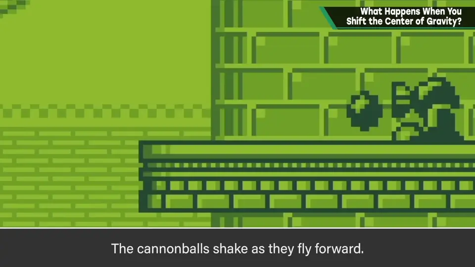
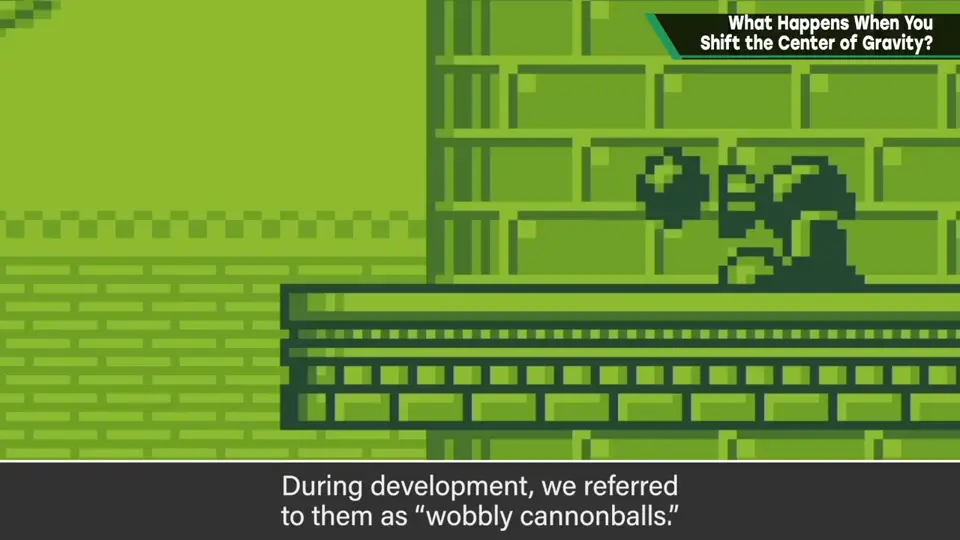
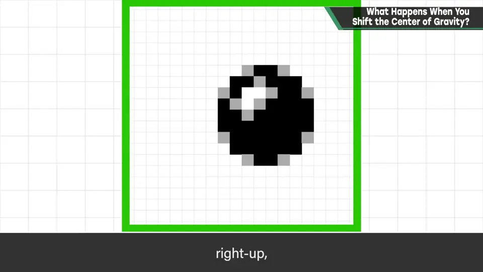
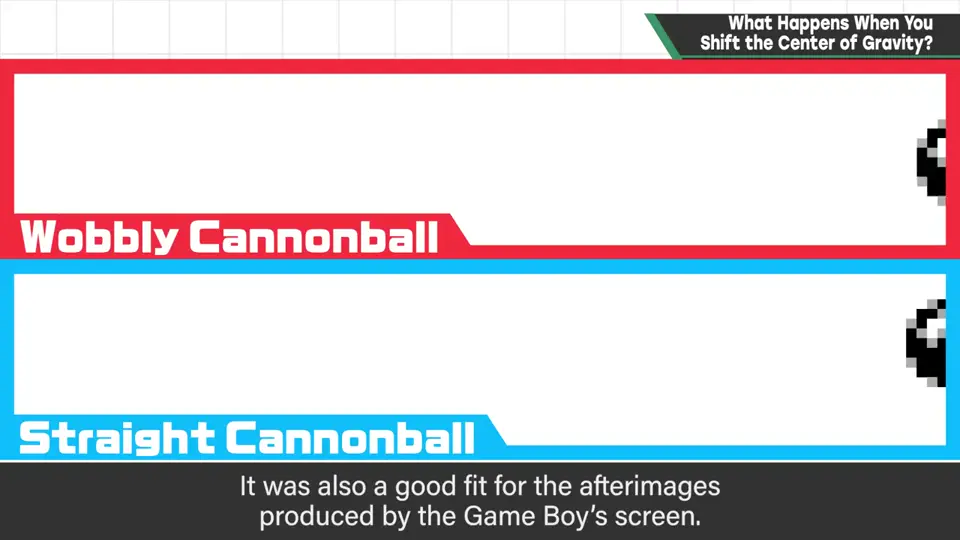
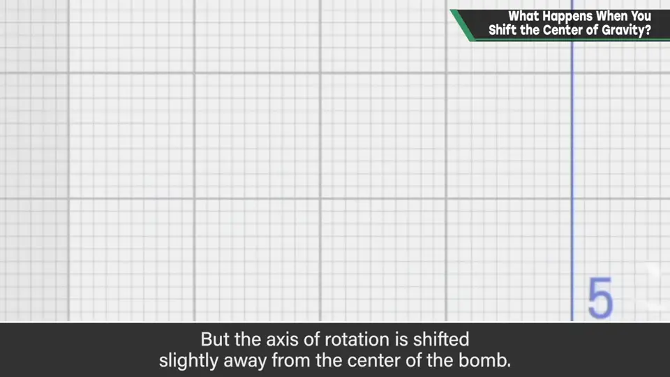
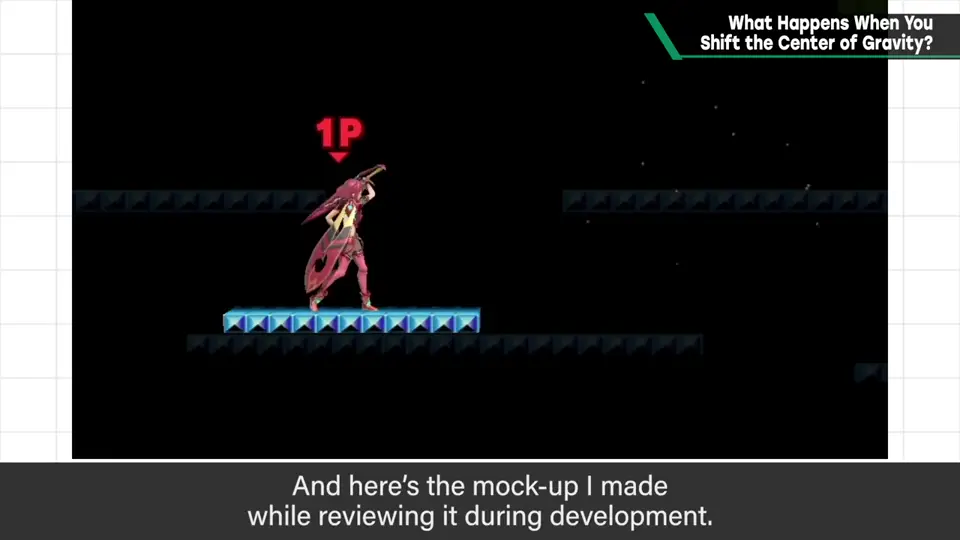
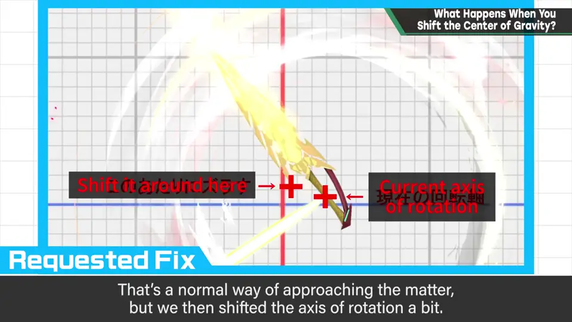
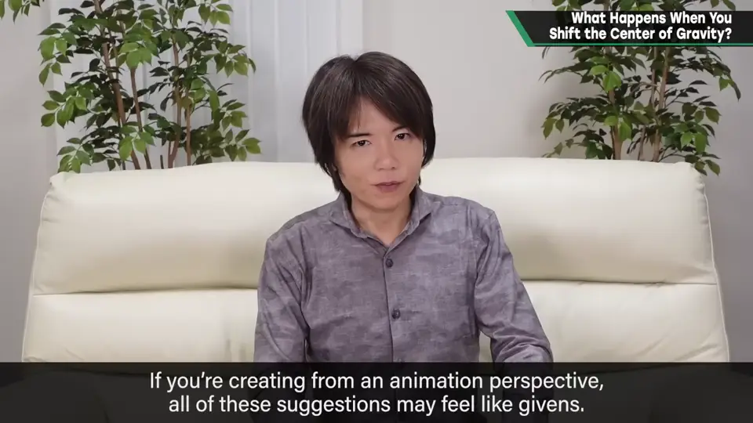

D-18 偏移重心会怎样？
原标题：What Happens When You Shift the Center of Gravity?

速览
这期分类放在「规格」，但也和动作、特效有关。卡比系列登场的大炮敌人（シャッツォ）发射的炮弹很有感觉：射出后会晃动着飞来，开发名称叫「晃晃弹」（wobbly cannonball）。只是单纯飞一个炮弹，表现上不太有趣，于是试着偏移精灵的显示位置：以 6 帧绕一圈的方式，按上、右上、右下、下、左下、左上循环。飞出来的存在感完全不同，也和 GB 会留残影的屏幕很搭。面对机械式的直线移动、绕中心旋转等，下点工夫赋予「感情」很重要。例如《大乱斗 特别版》投掷炸弹时在旋转，旋转轴稍稍偏离炸弹中心，从而带出一点不稳定感；若固定在中心轴，看起来会更无机质。焰（Pyra）的横必杀技 Blazing End，开发中他监修时画了一张修改指示图：起初剑的握把位置是旋转轴——一般想来确实如此——但把旋转轴稍微挪开了；修改后只有产品版，做不了对比视频，但表现上会有差异。如果是作为动作（motion）来做，这比较理所当然就能表现出来——「动画」一词本义就是给不动的东西注入灵魂。但若是作为规格（程序）来做，只是直进、匀速圆周运动旋转之类常常就成了理所当然。最终感觉好就行，但要避免因机器的常识而变得乏味，下点功夫。
1. 「晃晃弹」 0:04
这期分类姑且放在「规格」，但也和动作、特效有关。
卡比系列中登场的大炮敌人，发射的炮弹很有感觉：射出后会晃动着飞过来。开发中称之为「晃晃弹」。


只单纯地飞一个炮弹，表现上不太有趣。于是试着偏移精灵（sprite）的显示位置。
2. 6 帧绕一圈 0:38


飞出来的存在感完全不同。这和 GB 会留下残影的屏幕也很合拍。
3. 给机械运动加「感情」 1:02
面对机械式的直线移动、绕中心旋转等，下一点工夫赋予「感情」，很重要。
例如《大乱斗 特别版》里投掷炸弹时会旋转，旋转轴稍稍偏离炸弹中心，带出一点不稳定感。

4. 焰的 Blazing End 1:33
焰的横必杀技 Blazing End：这是开发中樱井监修时画的修改指示图。起初剑的握把位置是旋转轴——一般想来确实如此——但把旋转轴稍微挪开了。



修改后只有产品版，做不了对比视频，但表现上确实会有差异。
5. 动作 vs 规格 1:55
如果是作为动作（motion）来做，这比较理所当然就能表现——「动画」这个词的本义，就是给不动的东西注入灵魂。
但若是作为规格（程序）来做，只是直进、或匀速圆周运动般旋转，常常就成了理所当然。
自测题
1. 「晃晃弹」是怎么做的？
偏移精灵显示位置，6 帧一圈按上、右上、右下、下、左下、左上循环。 0:38
2. 《大乱斗 SP》投掷炸弹时旋转轴如何设置？为什么？
稍微偏离炸弹中心，带出不稳定感；固定中心会更无机质。 1:10
3. 为什么规格实现的运动更容易显得乏味？
程序做法常默认直进或匀速圆周旋转，被机器的常识带着走。 2:05